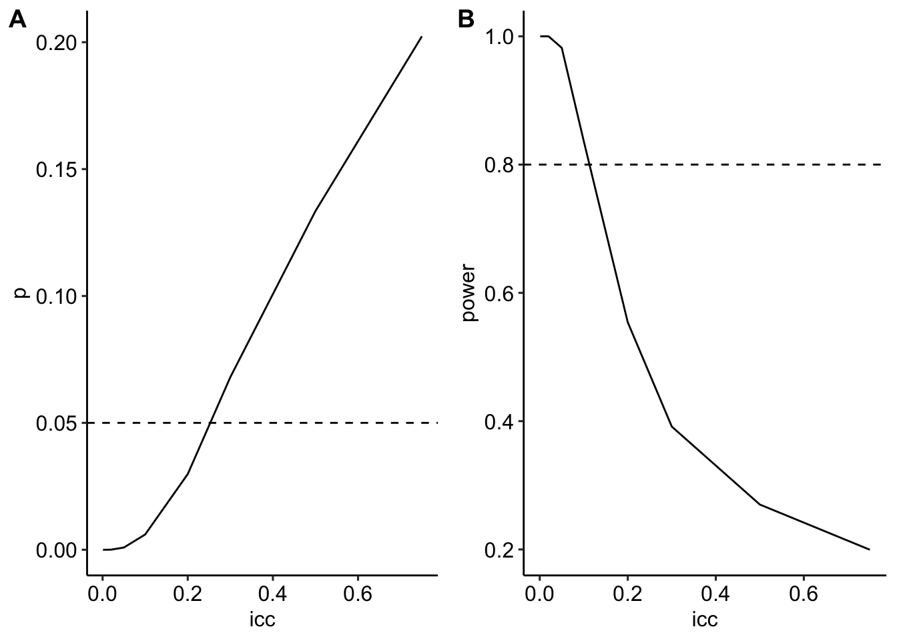

Fig 4h – FOXO1 is a master regulator of memory programming in CAR T cells
Fig 4h contains thousands of technical replicates. Technical replicates should not be analyzed as if they were randomly assigned to one of the experimental treatments. They weren’t. The resulting p-value is junk.
Quick learning explanation: Pseudoreplication is the analysis of subsampled (technical) replicates as if they were experimental replicates. This is a violation of the assumption of independence of errors. Nested data are measures within a discrete unit or a hierarchy of units, for example technical replicates within a tumor within a mouse.
Comments: The researchers measured gene set expression levels in thousands of cells from mice assigned to two treatments, with five mice in each treatment. Cells from all mice within a treatment were pooled. The t-test assumes independent errors of all expression level scores but the scores of the different cells within a mouse are not independent – these are technical replicates or subsampled replicates – so the scores will be clustered (a clinical research term) or batched (a bench biology term) where each mouse is the cluster or batch.
Single-cell experiments of this design are effectively not worth the time and money because small p-values are almost guaranteed even if there is no true difference in expression level. That is, we are extremely unlikely to reliably learn anything. More generally, this design will result in extremely small p-values for very small, and possibly biologically meaningless, effect sizes. When this happens, researchers are likely to pursue research paths with trivial consequences for mouse health.
Always Remember: A p-value is a measure of evidence against the null model and not a measure of the truth of an effect. In bench biology, a p-value is best used to aid decision making – with a small p-value we can act as if an effect exists and pursue further experiments. If there is a high cost to these further experiments, we want a really small p-value (say < 0.01) to act. If there is little cost to these further experiments we can use a larger p-value (say, < 0.1) to act.
Pseudoreplication red flag
Look at the figure!
The typical number of experimental replicates in bench biology is 3-8 with occasional replications up to about 30. The mere presence of many 10s or 100s of points per treatment is a red flag for pseudoreplication.
Background
CAR T cells are engineered immune cells that attack tumor cells. A common problem with CAR T cell treatment is the tumor cell killing activity diminishes over time. The researchers are interested in modifying the CAR T cells to maintain killing activity. FOX01 is a transcription factor that regulates genes that control the memory properties of T cells.
The experiment
Treatment levels 1. tNGFR (control). This is truncated NGFR 2. FOX01_OE (treatment). This is a modification that overexpresses FOX01.
Using mice with osteosarcoma, five mice were infused with tNGFR CAR T cells and five mice were infused with FOX01_OE CAR T cells. Tumors were collected and CAR T cells were isolated and pooled across the five mice within a treatment for single-cell RNA sequencing.
The response is a per-cell module score, which is a combined expression level for a specified gene set, in log10 units.
The statistical issue
The treatments were not randomized to cell but to mouse, so the scores within mouse are not independent of each other because the cells within a tumor within a mouse share tumor environmental factors that cells within a tumor in other mice do not share.
Setup
Code
knitr::opts_chunk$set(echo =TRUE)# wrangling packageslibrary(here) # here makes a project transportablelibrary(janitor) # clean_nameslibrary(readxl) # read excel, duh!library(writexl) # write excel, duh!library(data.table) # magical data frameslibrary(magrittr) # pipeslibrary(stringr) # string functionslibrary(forcats) # factor functions# analysis packageslibrary(emmeans) # the workhorse for inferencelibrary(nlme) # gls and some lmmlibrary(lme4) # linear mixed modelslibrary(lmerTest) # linear mixed model inferencelibrary(afex) # ANOVA linear modelslibrary(glmmTMB) # generalized linear modelslibrary(MASS) # negative binomial and some other functionslibrary(car) # model checking and ANOVAlibrary(DHARMa) # model checkinglibrary(mvtnorm)# graphing packageslibrary(ggsci) # color paletteslibrary(ggpubr) # publication quality plotslibrary(ggforce) # better jitterlibrary(cowplot) # combine plotslibrary(knitr) # kable tableslibrary(kableExtra) # kable_styling tables# ggplot_the_model.R packages not loaded abovelibrary(insight)library(lazyWeave)# use here from the here packagehere <- here::here# use clean_names from the janitor packageclean_names <- janitor::clean_names# use transpose from data.tabletranspose <- data.table::transpose# load functions used by this text written by me# ggplot_the_model.R needs to be in the folder "R"# if you didn't download this and add to your R folder in your# project, then this line will cause an errorsource_path <-here("R", "ggplot_the_model.R")source(source_path)data_folder <-"data from"image_folder <-"images"output_folder <-"output"
Import, wrangle, and summarize
Import and wrangle using data.table.
Code
data_from <-"FOXO1 is a master regulator of memory programming in CAR T cells"file_name <-"41586_2024_7300_MOESM9_ESM.xlsx"file_path <-here(data_folder, data_from, file_name)fig4h_wide <-read_excel(file_path,sheet ="Figure 4i",range ="A4:h7659",col_names =TRUE) |>data.table()setnames(fig4h_wide,old =names(fig4h_wide),new =c("tNGFR_teff", "FOXO1OE_teff", "x1","tNGFR_trm", "FOXO1OE_trm", "x2","tNGFR_bulk", "FOXO1OE_bulk"))fig4h_wide <- fig4h_wide[, .SD, .SDcols =c("tNGFR_teff", "FOXO1OE_teff","tNGFR_trm", "FOXO1OE_trm","tNGFR_bulk", "FOXO1OE_bulk")]fig4h <-melt(fig4h_wide,measure.vars =list(c("tNGFR_teff", "FOXO1OE_teff"),c("tNGFR_trm", "FOXO1OE_trm"),c("tNGFR_bulk", "FOXO1OE_bulk")),variable.name ="treatment_code",value.name =c("teff", "trm", "bulk"))fig4h[, treatment :=ifelse(treatment_code ==1, "tNGFR", "FOXO1OE") |>factor(levels =c("tNGFR", "FOXO1OE"))]
Summarize data
Code
fig4h_long <-melt(fig4h,id.vars ="treatment",measure.vars =c("teff", "trm", "bulk"),variable.name ="response",value.name ="score")fig4h_summary <- fig4h_long[!is.na(score), .(N = .N,mean =mean(score, na.rm =TRUE),sd =sd(score, na.rm =TRUE)), by = .(treatment, response)]fig4h_summary |>kable(caption ="Summary data of three response measures",digits =c(1,1,0,3,3)) |>kable_styling()
Summary data of three response measures
treatment
response
N
mean
sd
tNGFR
teff
7346
0.280
0.332
FOXO1OE
teff
7655
0.499
0.327
tNGFR
trm
7346
0.031
0.202
FOXO1OE
trm
7655
0.105
0.193
tNGFR
bulk
7346
0.379
0.116
FOXO1OE
bulk
7655
0.448
0.104
Statistical analysis to get effect sizes (but no inference)
Here I fit a naïve linear model (t-test equivalent) ignoring nesting to get the effect size (fold change) and relative effects size (Cohen’s D).
These fold-changes seem smallish, at least relative to fold changes for single genes (and not gene sets) that I typically see while scanning the bench biology literature. That said, what is important is not the fold change relative to other genes or gene sets but the biological consequences of the observed fold changes, a a kind of question that I’d love to see addressed more in the bench biology literature.
What we’d like to do but cannot
If the cells for each mouse within a treatment hadn’t been pooled OR if we had the mouse ID for each cell, then we would simply average the scores over all cells within a mouse and use a t-test using the five values for tNGFR and five values for FOX01_OE.
A conservative attempt at inference using resampling
The experiment has five independent values per treatment. Assuming there is no variation in the response between mice (that is, all variation is among cells within a mouse), we can get a statistically-valid p-value by randomly sampling five values of each treatment and doing a t-test. This p-value will be very unstable due to the large variation within a treatment level relative to the difference between treatments, so a better method is to use the within-treamtent values as the sampling distribution.
The algorithm:
Sample five values of each treatment, with replacement
Do a t-test
Save the ttest statistic
Save the effect (the difference in treatment means)
Repeat 1-4 2000 times
The 95% confidence limits of the difference in means is computed as the 2.5 and 97.5 percentiles of the set of effects
The p-value is computed as the number of t-values less than zero (this is a one-sided test).
lt0 <-function(x){return(sum(x <0))}p <-apply(t_out, 2, lt0)/n_repsp_table <-data.table(Response =names(p),p = p)p_table |>kable(caption ="Resampled p-values of each response",digits =2) |>kable_styling(full_width =FALSE)
Resampled p-values of each response
Response
p
TEFF
0.14
TRM
0.27
Bulk
0.14
A Confidence Interval is the set of bounds of the range of values that is consistent with the data and is useful to model the biological consequences of the low end vs. the high end.
The simplest use of a CI is to to simply use it as a binary p-value – if the CI includes zero, the p-value is not significant at the level of the CI (here, this is 5%). So, using the CI, we can infer that the p-value for each of the responses is not significant if we use 5% as our level. The directly measured p-values for all three responses are also not significant at this level and suggest we act as if there is no effect.
Better p-values…kinda
The resampling tests above are conservative because they use the total variance to estimate the t-value. What we really want is the variance among the mice, since this is the level that the treatment was applied, and this variance will be smaller than the total variance, so the denominator of the t-value will be smaller, the t-value will be bigger, and the p-value smaller! And we have a huge sample size to estimate this variance precisely.
The problem is, we don’t know the variance among the mice because the cells from mice within a treatment were pooled. So let’s model this and computed expected p-values across a range of among-mice variance. The amount of among-mice variance relative to the total variance (among-mice + among-cell) is the intraclass correlation coefficient (ICC), which ranges between zero and one. The further the ICC is from zero, the more correlated (dependent) the errors and the wrong the inference using a naïve test like that of the researchers.
Algorithm:
Start with the lowest ICC in a pre-specified list of ICCs that range between 0 and 1
Use the observed total variance and the ICC to compute the among-mouse (\(\sigma^2_\alpha\)) and among-cell (\(\sigma^2_\varepsilon\)) variances
Use the among-mouse variance and the observed difference between treatment means to create fake mouse means with five mice per treatment and an expected difference between treatment means equal to the observed difference.
Use the among-cell variance to create 1500 values per mouse (the average number of cells per mouse in the actual experiment) – these values are random “error” around each mouse mean.
Compute the mean value for each mouse
Do a t-test
Save the t-value
Save the p-value
Repeat 2-8 2000 times
Compute the Power of the modified experimental design at the specified ICC using the 2000 p-values
Compute the expected p-value for this ICC by
Compute the mean of the 2000 t-values
Compute the p-value from the averaged t-value
Change the ICC to the next higher ICC in the list and repeat 2-11.
Code
t_to_p <-function(t){ p <-2*pt(-abs(t), df = n *2-2, lower.tail =TRUE)return(p)}set.seed(1)n_reps <-2000n <-5n_ss <-1500sigma_total <-summary(m1_teff)$sigma # estimated SD for TEFFdelta <- .219# observed difference for TEFFicc_vec <-c(0.001, 0.005, 0.01, 0.02, 0.05, 0.1, 0.2, 0.3, 0.5, 0.75)t <-numeric(n_reps)table_out <-data.table(NULL)#sigma_a^2: the variance among mice#sigma_e^2: the error variance (within mice)for(sim_i in1:length(icc_vec)){ icc <- icc_vec[sim_i]# icc = sigma_a^2/sigma_total^2 sigma_a <-sqrt(icc * sigma_total^2)# sigma_total^2 = sigma_a^2 + sigma_e^2 sigma_e <-sqrt(sigma_total^2- sigma_a^2)for(rep_i in1:n_reps){ tngfr_means <-rnorm(n, sd = sigma_a) fox_means <-rnorm(n, sd = sigma_a) + delta # slow tngfr <-rnorm(n * n_ss, mean =rep(tngfr_means, each = n_ss), sd = sigma_e) |>matrix(nrow = n_ss, ncol = n) |>apply(2, mean) fox <-rnorm(n * n_ss, mean =rep(fox_means, each = n_ss), sd = sigma_e) |>matrix(nrow = n_ss, ncol = n) |>apply(2, mean)# fast shortcut since the estimated mean will be so close to true mean# tngfr <- tngfr_means# fox <- fox_means t[rep_i] <-t.test(tngfr, fox, var.equal =TRUE)$statistic } p <-t_to_p(t) table_out <-rbind( table_out,data.table(icc = icc,t =mean(t),power =sum(p <0.05)/n_reps ) )}table_out[, p :=2*pt(t, df = n *2-2, lower.tail =TRUE)]gg1 <-ggplot(data = table_out,aes(x = icc,y = p)) +geom_line() +geom_hline(yintercept =0.05, linetype ="dashed") +theme_pubr()gg2 <-ggplot(data = table_out,aes(x = icc,y = power)) +geom_line() +geom_hline(yintercept =0.8, linetype ="dashed") +theme_pubr()plot_grid(gg1, gg2, ncol =2, labels ="AUTO")

Panel A shows the expected, statistically valid p-value for the experimental design over a range of among-mouse variation relative to the total variation (the ICC). The modeling suggests that, given the observed difference, a modified experiment with known mouse ID for each cell would rarely observe small p-values unless the ICC were pretty small (less than about 0.25).
Panel B shows the power of a modified experimental design with known mouse ID given different amounts of among-mouse variation relative to the total variation (the ICC) and using 5% as the significance level. Remember, Power is the probability of observing a p-value less than the set significance level. Typically, researchers want a power of 0.8 or higher to justify the time, cost and animal welfare of an experiment. The modeling suggests that a modified experimental design, with known mouse ID for each cell, and given the observed difference, would require a pretty small ICC (less than 0.15) in order to have good power.
Unfortunately, we don’t know the actual ICC and it’s hard for me to make a reasonable guess, given my lack of familiarity with these kinds of data.
And remember, the observed difference in expression levels seems kinda small.
Why the actual experimental design isn’t worth the time, money, or cost to animal welfare
Given the actual (not modified to know mouse ID) experimental design, what is the rate of false positives (Type I error) - that is, the rate of significant p-values if there really were no effect of treatment? Like the power above, this depends on the relative amounts of among-mice and among-cell variance.
Algorithm:
Start with the lowest ICC in a pre-specified list of ICCs that range between 0 and 1
Use the observed total variance and the ICC to compute the among-mouse (\(\sigma^2_\alpha\)) and among-cell (\(\sigma^2_\varepsilon\)) variances
Use the among-mouse variance to create fake mouse means with five mice per treatment and an expected difference between treatment means equal to zero.
Use the among-cell variance to create 1500 values per mouse (the average number of cells per mouse in the actual experiment) – these values are random “error” around each mouse mean.
Compute the mean value for each mouse
Do a t-test
Save the p-value
Repeat 2-7 2000 times
Compute the Type I error rate of the experimental design at the specified ICC using the 2000 p-values
Change the ICC to the next higher ICC in the list and repeat 2-9.
The plot shows that at effectively any ICC not super close to zero, the Type I error rates are elevated and this elevation is extreme at even very small ICC – at an ICC of 0.005, this rate is 51%! At any biologically realistic ICC, the experimental design will result in significant p-values the majority of the time when the true treatment effect is zero!
Published Methods, cut and pasted from the article
To determine whether FOXO1 was also capable of increasing the activ- ity of CAR T cells against solid tumours, we infused tNGFR or FOXO1OE HER2.BBζ CAR T cells into 143B osteosarcoma-bearing NSG mice.
To generate single-cell RNA-seq libraries of tumour-infiltrating CAR T cells, Her2+ tumours were collected from five mice per condition, and human CD45+ cells were isolated by NGFR selection as described above (see ‘Cell selection’). Tumour-infiltrating CAR T cells were further purified by sorting human CD3+ TILs from each isolate using a Cytek Aurora Cell Sorter. A total of 20,000 CAR TILs were sorted from each tumour and pooled across five mice per group. Cells were barcoded and sequencing libraries were generated using the 10X Chromium Next GEM Single Cell 3’ v.3.1 kit (10X Genomics) according to the manufacturer’s instructions. Libraries were sequenced at the CHOP High Throughput Sequencing Core on an Illumina NovaSeq 6000 with an average read depth of 50,000 reads per cell.
Gene set scores for Teff, TRM and Treg cell subtypes were calculated with AddModuleScore (Seurat), using curated gene lists from a previous study58 (Extended Data Fig. 9g–i). AddModuleScore was also used to calculate a per-cell FOXO1 transcriptional activity score, using the top 100 upregulated genes in CD8+ HA.28ζ CAR T cells overexpressing FOXO1 versus tNGFR (Fig. 2).